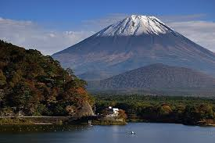

Descubra o Japão: Uma Jornada Inesquecível
O Japão é um destino fascinante, oferecendo uma combinação única de tradição milenar e modernidade vibrante. Seja explorando templos antigos, admirando paisagens naturais deslumbrantes ou se deliciando com a gastronomia local, cada momento no Japão é uma descoberta.
Principais Destinos Turísticos
Tóquio
Torre de Tóquio - Um dos ícones da cidade |
KyotoTemplo Kinkaku-ji - Pavilhão Dourado em Kyoto |
Monte Fuji Monte Fuji - O símbolo mais famoso do Japão |
HokkaidoHokkaido - Japão |
Atrações e Experiências Únicas
Além dos destinos icônicos, o Japão oferece diversas experiências únicas que vão desde a imersão cultural até aventuras ao ar livre:
- Shinrin-yoku: Conhecida como "banho de floresta", esta prática envolve caminhar tranquilamente por florestas para promover bem-estar e redução do estresse.
- Templos e Santuários: Visite lugares sagrados como o Santuário Meiji em Tóquio e o Templo Fushimi Inari em Kyoto.
- Onsen: Desfrute das águas termais naturais em locais como Hakone e Beppu .
- Cultura Pop: Explore o universo dos animes e mangás em Akihabara, Tóquio.
Dicas de Viagem
Para aproveitar ao máximo sua viagem ao Japão, considere as seguintes dicas:
- Melhor Época para Visitar: A primavera (março a maio) e o outono (setembro a novembro) são as melhores épocas para visitar, devido ao clima ameno e às belas paisagens de cerejeiras em flor e folhas de outono.
- Transporte: O sistema de transporte público no Japão é extremamente eficiente. O Japan Rail Pass é uma opção econômica para viajar de trem por todo o país.
- Hospedagem: Experimente ficar em um ryokan, uma tradicional pousada japonesa, para uma autêntica experiência cultural .